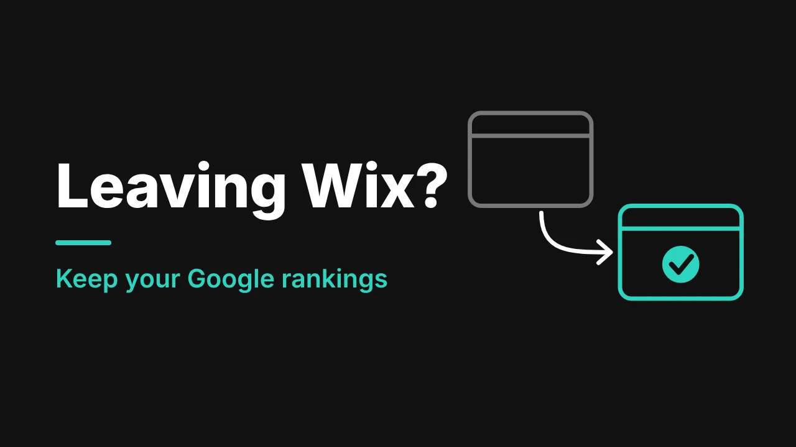

The question we hear most from cleaning company owners who want a better website is this: "If I change my website, will I lose my Google rankings?"
That fear is the main reason owners stay on a site that is costing them calls. Here is the process we follow, every time, to keep it from happening.
What Google says to expect
Google's own guide to moving a site is reassuring and honest at the same time:
- Rankings may go up and down for a while as Google re-reads your site. For a small or medium site, it can take a few weeks or more for most pages to move.
- Permanent redirects (called 301 redirects) do not cause a loss of link value.
- You should change one big thing at a time, for example not your web address, your platform and your layout all at once.
- You should keep your redirects in place for at least a year.
Nobody can promise zero movement. What you can do is make the move as clean as possible, and that is what the steps below are for.
Our 8 steps
- Take a snapshot of the old site. We list every page, using the sitemap and Google Search Console, and note which ones get the most visits. We record your current rankings and how many calls and forms you get a month. We also save every photo, PDF and piece of text. This is your "before" picture, so we can prove the "after".
- Keep your web address. We keep your domain name, and wherever we can we keep your page addresses (URLs) the same too. Google advises changing one thing at a time, so we move the site first and save any big changes for later.
- Map every old page to its best new page. We write a simple list: old address on the left, new address on the right. Pages that are merged point to the merged page. Pages that are truly gone return a proper "not found" message. We never send everything to the homepage, because Google can treat that as an error.
- Build on a private test site. While we work, the new site is hidden from Google so half-finished pages don't get indexed.
- Carry over what works and improve on top. We keep the pages and wording that already earn traffic. Then we make the site faster, add the service and area pages the old one was missing, and fix titles and descriptions. Bigger content changes wait until the move has settled.
- Launch with redirects switched on. On launch day we remove the test-site block (forgetting this is one of the most common mistakes Google warns about), turn on the redirects so each one goes straight to its final page, update internal links, and check forms, phone links and page titles.
- Check everything. We test the redirects, look for "not found" errors, submit the new sitemap in Google Search Console and make sure tracking works on the new site. We also update links on your Google Business Profile, social profiles and ads.
- Watch it and keep the redirects. For the first few weeks we compare traffic and rankings against the snapshot. We keep the redirects live for at least a year, which is Google's minimum recommendation.
What to do before you move (and what not to)
- Don't cancel your old plan until the new site is live and checked.
- Don't lose your login to your domain. Find out who owns it and where it is registered.
- Don't change your domain name and your design at the same time.
- Don't delete old pages just because the new design looks cleaner.
- Do ask for a before-and-after report. If whoever is moving your site can't show you one, be careful.
When you shouldn't move at all
If your site ranks well and the phone rings, leave it alone and improve it in place. A move is for when the builder itself is the limit: slow on phones, no room for more pages, or no control over the settings that matter. If you are not sure, read why Wix, GoDaddy or Squarespace sites stop ranking and run the 10-minute check in it.
What this takes, and why owners hand it to us
All of this is possible to do yourself on a small site. It is also easy to get wrong in a way you won't notice for weeks, because a missing redirect doesn't show up as an error on your screen. It shows up as quiet phones.
This is the daily work of our web design for cleaning companies team, backed by local SEO for cleaning companies and ongoing website support and maintenance once you are live. You can see the kind of sites we build in our recent cleaning website designs, check the pages every cleaning company website needs, and see what a cleaning company website costs before you decide.